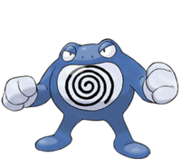

Poliwrath es un Pokémon de tipo agua/lucha introducido en la primera generación. Es una de las posibles evoluciones de Poliwhirl.
Evoluciones de Poliwrath

Su nombre procede de las palabras en inglés polliwog (palabra incorrecta en desuso para referirse a renacuajo) y wrath (ira).
Su nombre japonés, Nyorobon, podría venir de ニョロニョロ nyoronyoro, (el sonido de una serpiente al reptar) y una forma alternativa de leer 洪 kō (inundación).
Su nombre francés, Tartard, viene de la repetición de la última sílaba de têtard (renacuajo en francés) y la palabra tarte (puñetazo).
Su nombre alemán, Quappo, proviene de kaulquappe (renacuajo).
Cuando Poliwhirl evoluciona en Poliwrath su semblante cambia totalmente, ganando el subtipo lucha cosa que lo hace mucho más intimidante. Es un Pokémon que se caracteriza por su alto rendimiento físico, siendo capaz de nadar mares ida y vuelta sin agotarse, ganándole con suma facilidad a cualquier nadador humano. Aunque pasa la mayor parte de su vida en tierra, sus grandes músculos nunca se cansan cuando nada, pudiendo cruzar grandes océanos un par de veces sin esforzarse, haciendo uso de sus brazos y piernas puede mantenerse en la superficie del agua por medio segundo. Al nadar suele usar varios estilos como el crol, de braza o el mariposa. En Alola los niños suelen imitarlo para aprender a nadar. Debido a su condición física este Pokémon es 100% musculo, manteniendo un 0% de grasa en su cuerpo. Sus fuertes manos son capaces de pulverizar una roca de un puñetazo, en zonas heladas las usa para abrirse paso por el hielo mientras nada. Además de ser un excelente nadador es un excelente artista marcial dominando varios artes. A pesar de ser un gran nadador, sus músculos no están desarrollados para correr en tierra firme.
Este Pokémon habita tierra firme, sin embargo se mantiene cerca de mantos acuíferos para poder entrenarse, sin importar si son de agua dulce o salada.
Página creada por Luis Felipe Restrepo y Daniel Felipe Gutierrez
Información extraida de: Poliwrath. (s. f.). WikiDex. Recuperado 5 de noviembre de 2022, de https://www.wikidex.net/wiki/Poliwrath